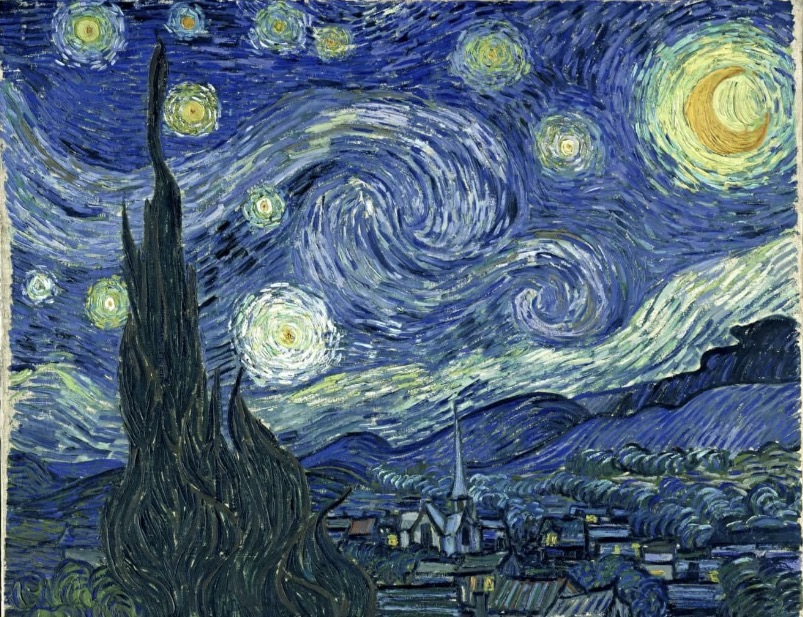
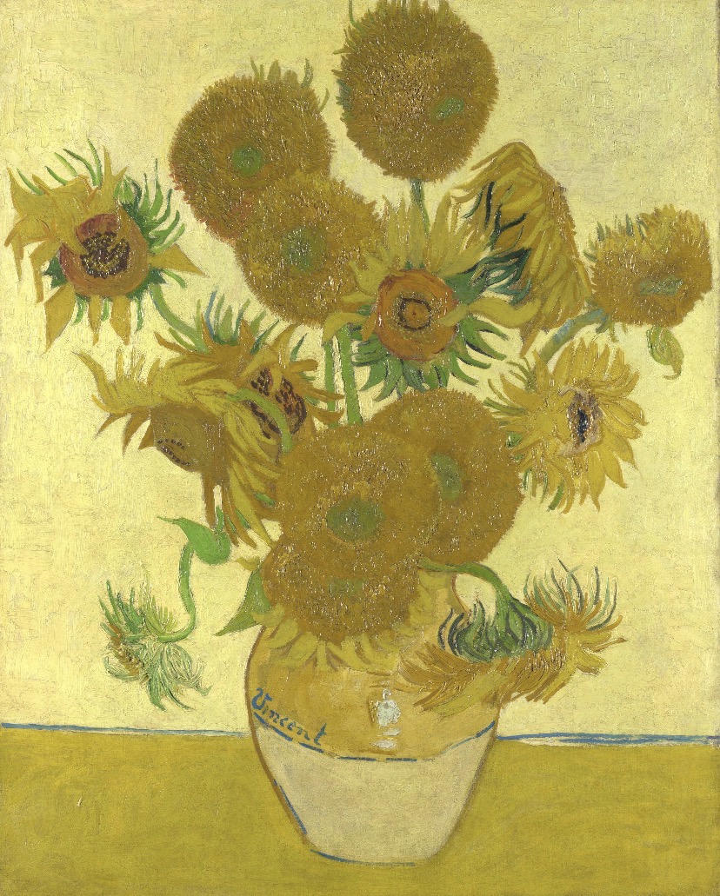
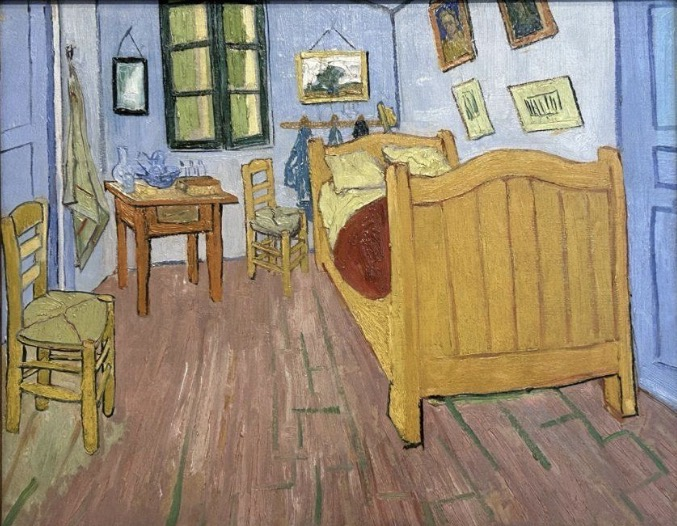
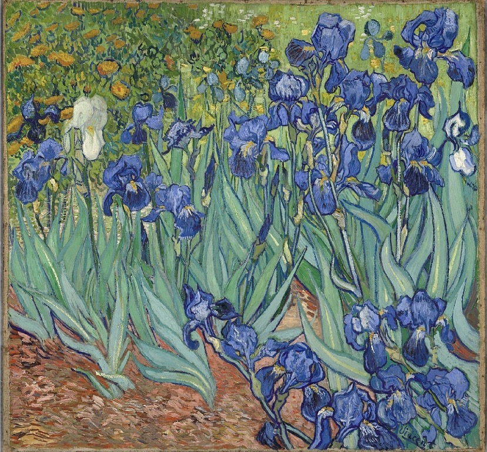
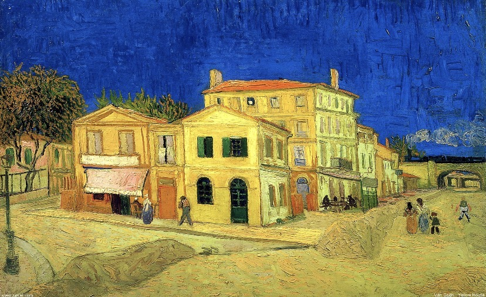
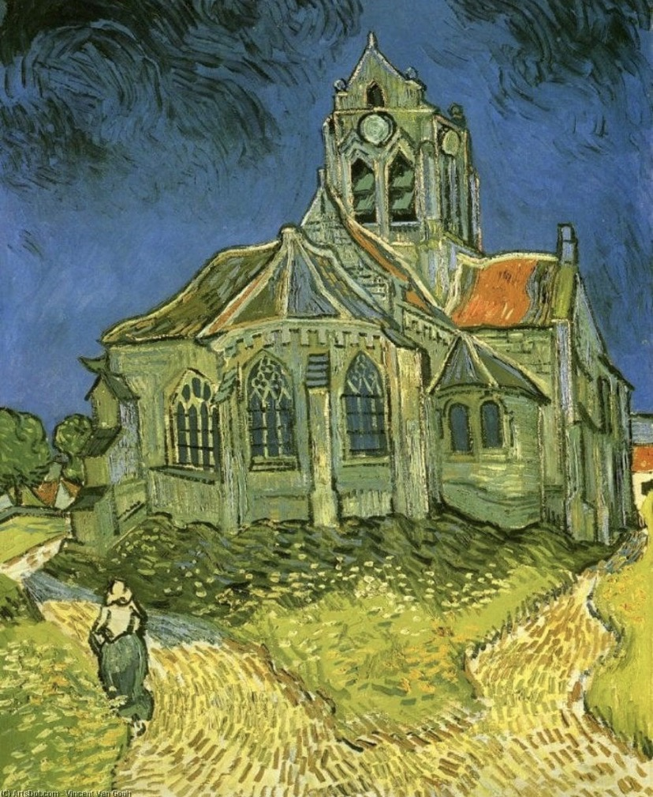
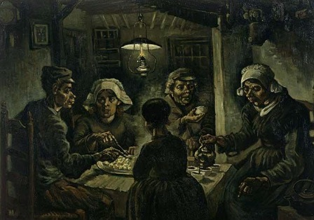
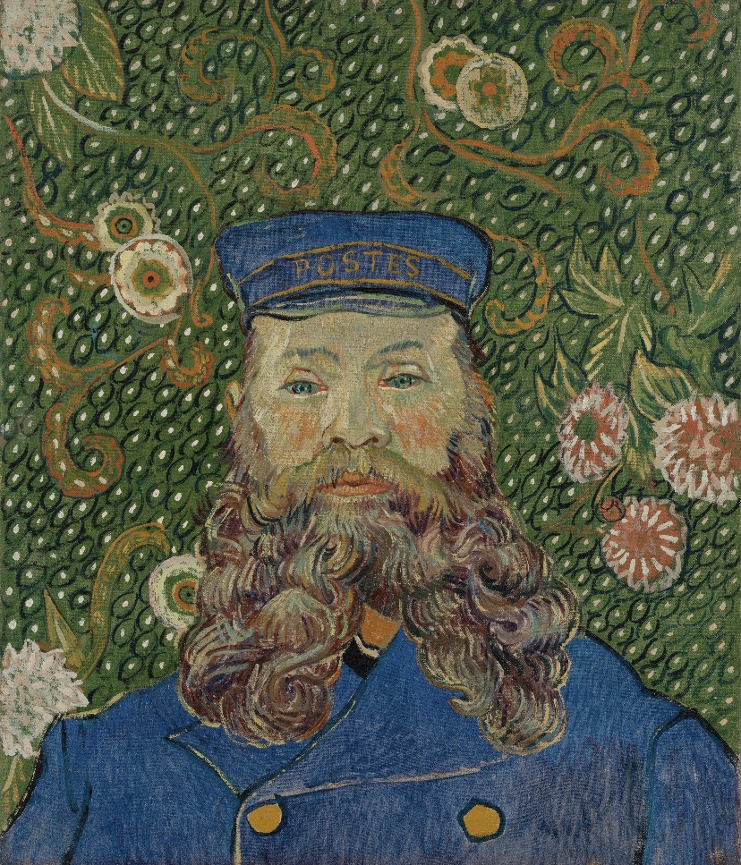
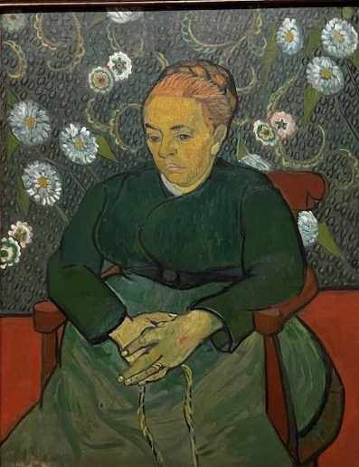
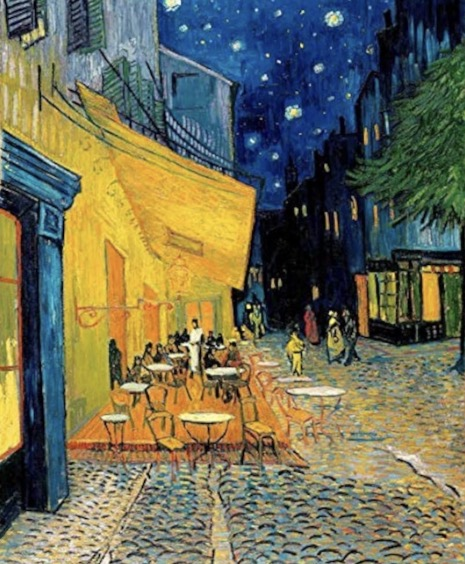

01 · 1889
A Noite Estrelada
Uma das pinturas mais famosas da história da arte, marcada por um céu em movimento e estrelas luminosas.
ABRIR OBRA →
Entre pinceladas intensas, noites estreladas e campos de amarelo vibrante, Vincent van Gogh transformou sentimentos em pintura e deixou uma das obras mais marcantes da história da arte.
ENTRAR NA EXPOSIÇÃO ↓
Vincent Willem van Gogh nasceu em 30 de março de 1853, em Zundert, nos Países Baixos. Antes de se tornar um dos artistas mais conhecidos do mundo, passou por diferentes profissões e caminhos até encontrar na pintura uma forma de expressar aquilo que sentia.
Sua carreira artística foi relativamente curta. Van Gogh começou a dedicar-se seriamente à arte por volta dos 27 anos, mas produziu uma quantidade enorme de pinturas e desenhos durante a década seguinte.
Sua produção foi marcada por paisagens, retratos, interiores e cenas do cotidiano. As cores passaram a ter um papel cada vez mais importante, e suas pinceladas tornaram-se fortes, visíveis e cheias de movimento.
Van Gogh morreu em 29 de julho de 1890, aos 37 anos. Durante sua vida, seu trabalho recebeu pouco reconhecimento. Após sua morte, porém, sua arte ganhou enorme importância e influenciou gerações de artistas.
Vincent nasce em Zundert, no sul dos Países Baixos, em uma família ligada à religião e à vida comunitária.
Trabalha no comércio de arte, envolve-se com religião e passa por diferentes experiências antes de escolher definitivamente a pintura.
Em Nuenen, desenvolve uma pintura mais escura e concentrada na vida dos trabalhadores rurais. É nesse período que pinta Os Comedores de Batatas.
Na França, sua paleta ganha cores muito mais vibrantes. Amarelos, azuis e verdes passam a dominar muitas de suas pinturas.
Van Gogh morre em Auvers-sur-Oise. Sua obra, porém, continuaria crescendo em importância muito depois de sua morte.
Clique em cada obra para entrar em uma pequena sala da exposição e conhecer sua história, contexto e importância.
Uma das pinturas mais famosas da história da arte, marcada por um céu em movimento e estrelas luminosas.

A série em que Van Gogh transforma flores simples em uma celebração intensa do amarelo.

Um interior simples transformado pela cor, pela perspectiva e pela vontade de transmitir uma sensação de descanso.

Flores azuis e violetas ocupam a tela com uma energia visual criada pelo contraste das cores.

O edifício amarelo de Arles representava para Van Gogh a ideia de um espaço onde artistas poderiam viver e trabalhar juntos.

Uma arquitetura aparentemente familiar ganha formas ondulantes e uma atmosfera profundamente expressiva.

Uma família camponesa reunida ao redor de uma mesa. A obra mostra uma fase inicial e mais escura da pintura de Van Gogh.

Um retrato marcado pelo azul e pelo amarelo, mostrando a personalidade do carteiro de Arles.

Uma mulher sentada aparece diante de um fundo vibrante, criando uma composição relacionada à ideia de conforto e tranquilidade.

Uma rua de Arles iluminada pelo café amarelo, contrastando com o azul profundo da noite.
Van Gogh não buscava simplesmente reproduzir aquilo que estava diante de seus olhos. Ele utilizava a pintura para construir uma experiência visual e emocional.
Por isso, suas árvores podem parecer se mover, o céu pode ganhar formas circulares e as cores podem ser muito mais intensas do que seriam na realidade.
A pincelada é uma parte essencial de sua linguagem. Em vez de esconder o gesto do artista, Van Gogh deixa que ele apareça na superfície da tela.
O amarelo aparece repetidamente em sua produção: girassóis, casas, cafés, campos e estrelas. A cor podia criar calor, luminosidade e intensidade.
As pinceladas visíveis fazem a superfície parecer viva. Linhas, curvas e pequenos traços conduzem o olhar de quem observa.
Van Gogh explorou intensamente relações entre cores contrastantes. O encontro entre azuis profundos e amarelos luminosos tornou-se uma de suas marcas.
Suas pinturas carregam atmosferas diferentes: tranquilidade, solidão, energia, contemplação, esperança e inquietação.
Porque suas pinturas não parecem distantes. Mesmo produzidas no século XIX, elas continuam transmitindo sensações que podemos reconhecer hoje.
Sua história também mudou a maneira como pensamos sobre o artista: alguém que não precisa apenas representar o mundo, mas pode transformá-lo através de sua própria percepção.
O impacto de Van Gogh ultrapassou a pintura. Sua linguagem visual passou a influenciar diferentes gerações de artistas e continua presente na cultura visual contemporânea.
Talvez seja essa uma das maiores forças da pintura de Van Gogh: depois de olhar para uma de suas obras, é difícil continuar enxergando o mundo exatamente da mesma maneira.
Van Gogh passou poucos anos dedicando-se à pintura, mas suas cores atravessaram gerações. Suas obras continuam nos lembrando que a arte pode transformar uma paisagem, uma pessoa ou uma noite comum em algo impossível de esquecer.
VOLTAR AO INÍCIO ↑
O que você está vendo?
Contexto
Por que essa obra é importante?